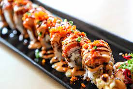

Sushi

A picture of scrumptious sushi
Guys, have you ever tried making homemade sushi rolls?
It’s actually much easier than you might think. And of course, the best part of making your own sushi rolls is that you get to decide exactly what goes in them. Yyyyyum.
Ingredients
- Sushi Rice
- Nori
- Fillings
- Spicy Mayo (optional)
Steps
- Prep all of your ingredients.First things first, make your sushi rice ideally at least an hour or two in advance so that it has time to cool to room temperature before assembling your rolls. Then go ahead and prep all of your other ingredients so that you can have a nice assembly line ready to go for your rolls.
- Press the rice.Then, begin your assembly! The first step will be to press the rice onto your sheet of nori in an even layer, leaving a 1-inch empty border of nori at the top. (See photos above.)
- Add the fillings.Next, layer on your fillings horizontally on the rice, side by side, as evenly as possible.
- Roll up the sushi.Lift up the bottom edge of the sushi mat and carefully fold it over the fillings until they are enclosed in a roll, yet still leaving the top 1-inch of the empty nori exposed. Use the sushi mat to squeeze the roll in as tightly as possible. (Although not too tight, as you don’t want all of the fillings to squish out!) Dip your fingers in the water bowl once more and use them to wet the remaining 1-inch of nori. Then use the sushi mat to finish rolling up the roll until it is completely enclosed, giving it a final squeeze or two once it has been rolled up to be sure that everything is packed in there tightly. Repeat with the remaining ingredients.
- Cut the sushi.Using a very sharp knife, cut the each sushi roll into 8 equal(ish)-sized pieces on a cutting board. Transfer them to your serving plate.
- Drizzle and garnish.Drizzle the sushi with the spicy mayo and/or sprinkle with extra toasted sesame seeds.
- Serve.Serve immediately, along with pickled ginger, wasabi paste, and soy sauce for dipping. And enjoy!